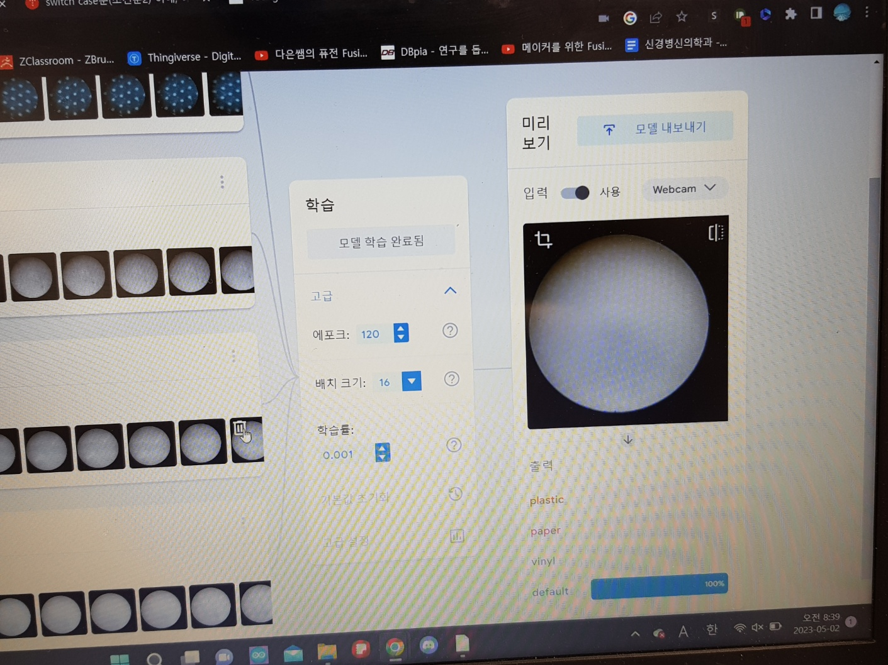
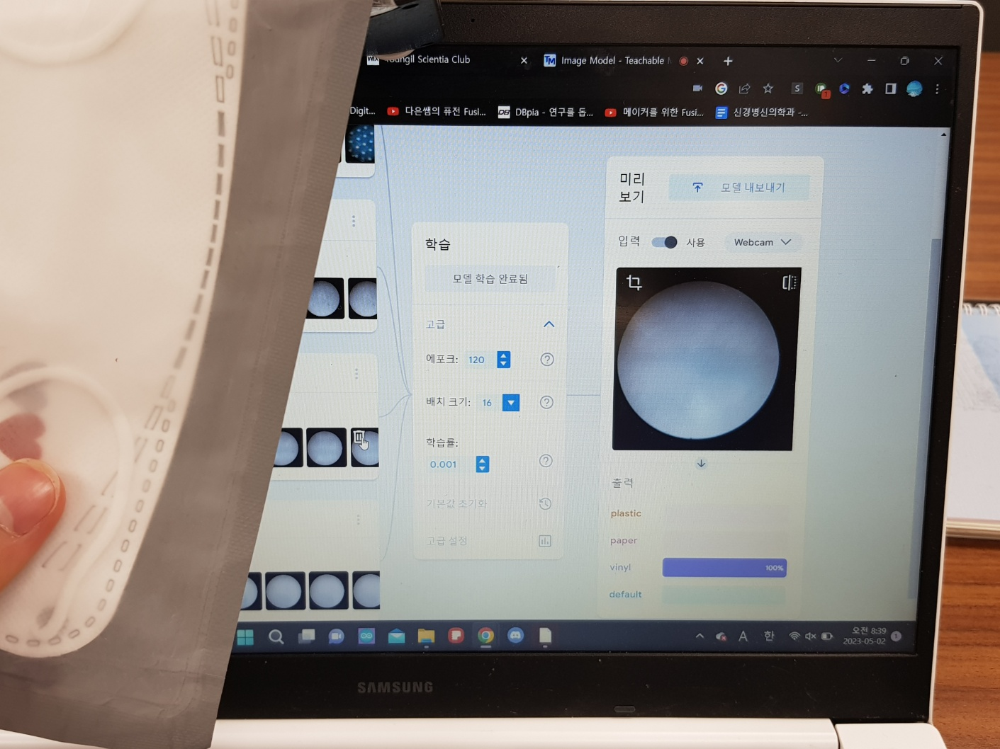
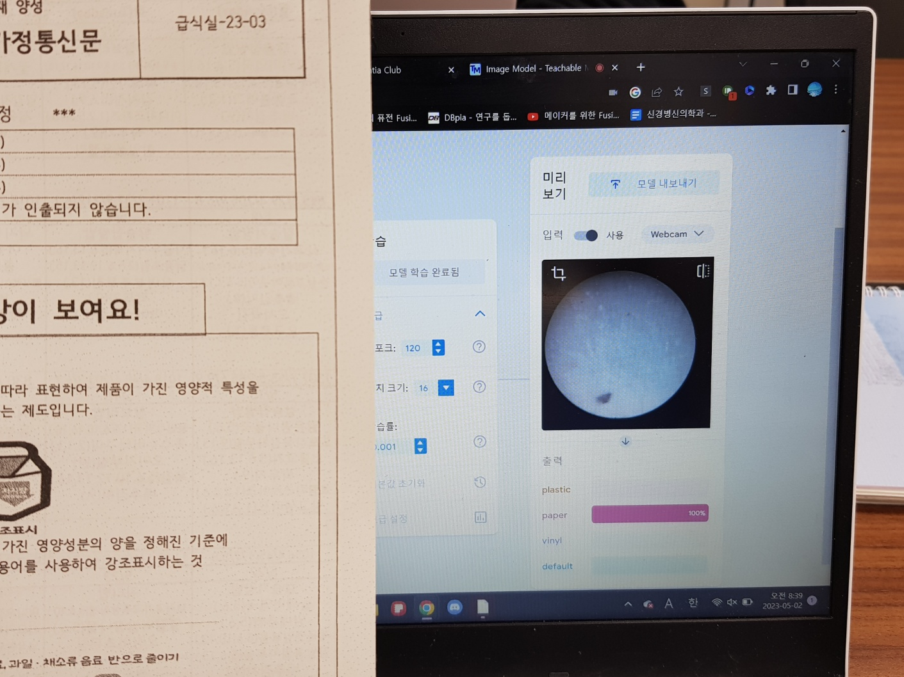
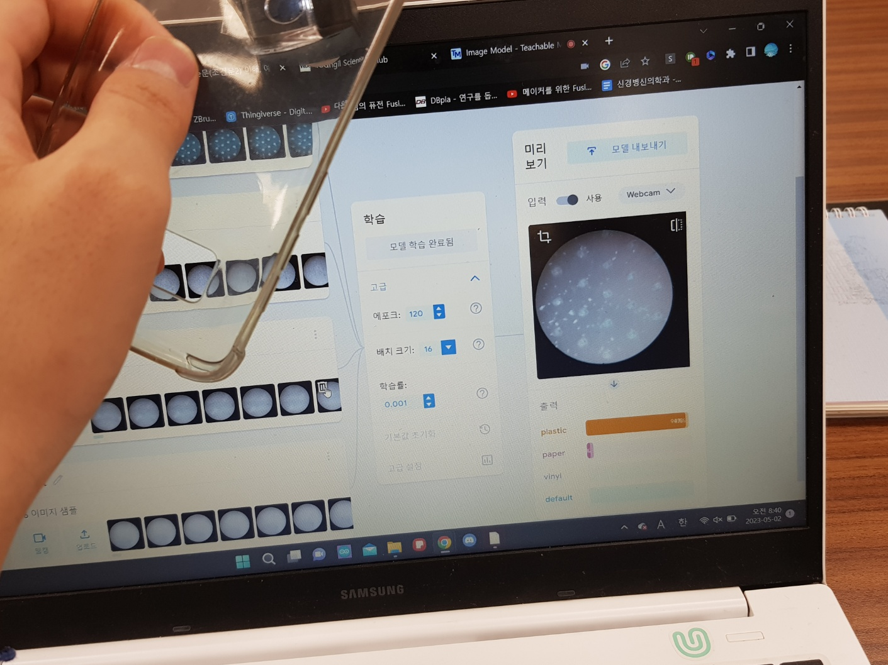
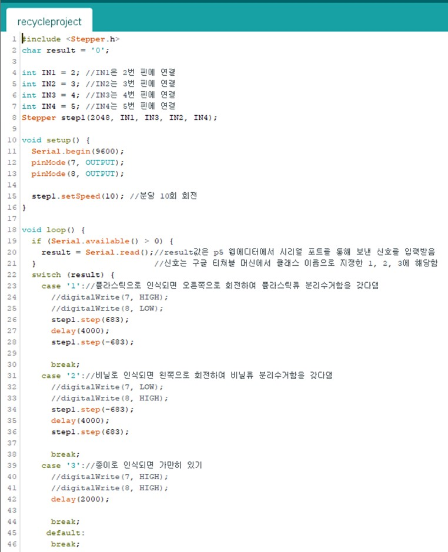
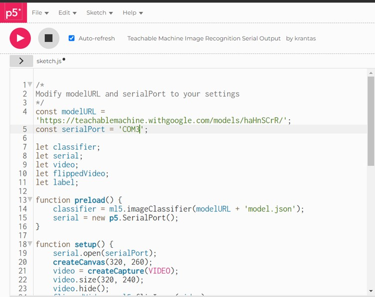
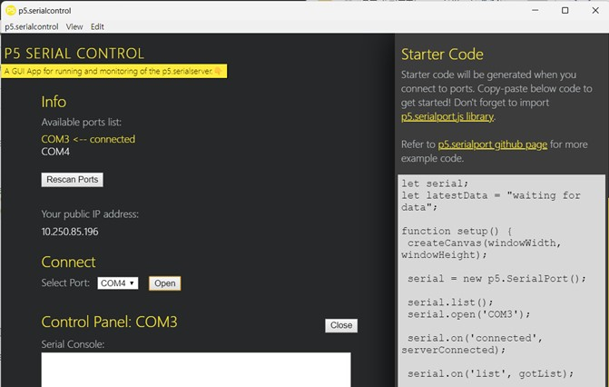

인간과 AI의 공존을 도모하는 AI를 이용한 로봇 제작
개요
현대사회에서 인공지능을 이용해 인공지능과 우리의 삶이 조화를 이룰 수 있는 무언가를 개발하고자 하여 낸 아이디어로 학교 인공지능 수학 시간에 배운 구글 티쳐블 머신을 활용해서 쓰레기 분리수거 시스템을 만들어 보기로 하였다
원리
쓰레기를 현미경의 렌즈에 갖다대면 학습된 데이터를 기반으로 구글 티쳐블 머신에서 쓰레기가 어떤 종류인지 알려주고 p5 웹 에디터에 작성된 프로그램을 통해 인식된 쓰레기의 종류에 따라 특정 값을 출력하도록 한다. 아두이노로 출력값을 전송시켜 아두이노에 연결된 모터를 통해 물리적으로 쓰레기를 분류시킬 수 있게 한다.
내가 제작할 것은 쓰레기의 종류를 인식하여 분리수거를 도와주는 쓰레기통이다.
쓰레기를 인식하면 쓰레기통의 칸막이가 회전하여 자동으로 알맞은 분리수거함을 갖다대는 원리이다.
제작과정
1. 구글 티쳐블 머신 학습시키기


인식된 쓰레기의 종류에 따라 비닐/종이/플라스틱을 구분하는 인공지능을 구글 티쳐블 머신을 통해 제작한다.


보다시피 인식이 잘 되는 모습이다.
모델이 작동하는 것을 확인했으니 모델을 업로드한다.
2. 아두이노 프로그래밍하기

컴퓨터로부터 입력받은 입력값에 반응할 수 있도록 아두이노를 프로그래밍해주고 업로드해준다.
3. P5 웹에디터에 구글 티쳐블 머신 모델과 신호를 출력할 포트를 입력해준다.

4. P5 시리얼 컨트롤 프로그램을 통해 아두이노가 연결된 포트와 프로그램을 연결시킨다.

5. 쓰레기통을 설계 및 제작한다.
쓰레기를 일일이 분리수거하는데 드는 수고를 덜 수 있고, 꼭 쓰레기통의 형태가 아니더라도 쓰레기의 표면 구조를 인식시켜 쓰레기를 분류하는 해당 AI를 활용하면 대형 쓰레기 처리장 등에서 쓰레기를 분류하는 데에서도 사용할 수 있을 것 같다.
보완점
내가 만들었던 AI는 학습된 쓰레기 사진의 수와 종류가 적었는데, 다양한 종류의 대량의 쓰레기 사진들을 학습시킨다면 더 다양한 종류의 쓰레기를 감별해낼 수 있을 것이다.